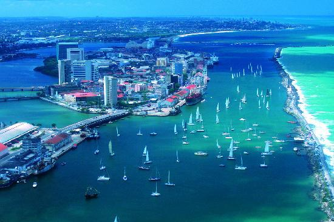

Dados Pessoais

- RECIFE: Recife, a capital do estado de Pernambuco, no nordeste do Brasil, distingue-se pelos seus vários rios, pontes, ilhéus e penínsulas. Recife Antigo, na própria ilha junto ao porto, é o centro histórico da cidade antiga que data do século XVI. A sul, a popular Praia de Boa Viagem é protegida por recifes e está ladeada de blocos de apartamentos elevados, hotéis modernos e restaurantes. Desde que Porto de Galinhas foi elevado a capital do turismo de massa em Pernambuco, Recife perdeu o seu status de destino de praia.
Tanto melhor: no Recife a praia é um (ótimo) complemento a tudo o mais que a cidade oferece. A saber: dois centros históricos (o Recife Antigo e a vizinha Olinda), vida cultural intensa, gastronomia de qualidade.
Boa Viagem, o bairro praiano onde está a maioria dos hotéis, é tão auto-suficiente que até o aeroporto fica por lá. Se o trânsito estiver livre e o check-in do seu hotel for eficiente, ao desembarcar você estará a vinte minutos da sua primeira caminhada pelo calçadão.
Mas aproveite para se aventurar longe da praia: na Zona Norte, o bairro de Casa Forte — e seu núcleo mais antigo, o Poço da Panela — revela um Recife charmoso e desconhecido dos turistas.